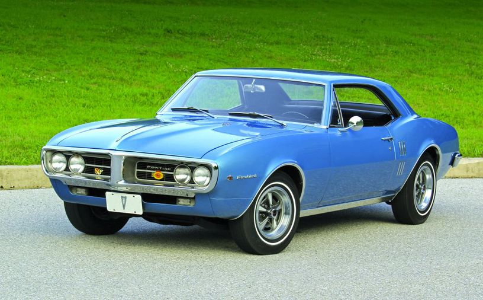
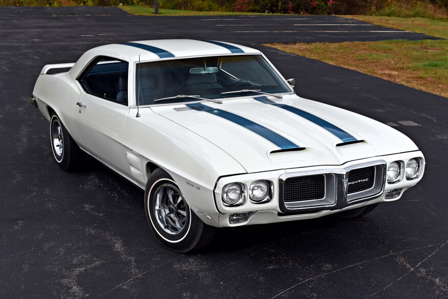

Pontiac Firebird 1967-2002
Kiss-Fodor Zsombor
rövid bevezető:
a Pontiac Firebird egy Amerikai izomautó volt, az F-body
autó platformon épült, amit a Chevrolet Camaróval oszott meg. 1969-ben adták ki a Trans Am változazott ami egy jobban irányíthatóbb
és erősebb opció csomag volt, volt még más opicók is 1970-töl kezdve a kocsi 2. generációjában.
1967-1969
leírás
1967 február 23.-án adták ki a Firebirdet a Camaro után 1 hónappal, az első geneáció mind a 3 évben külöbözött föleg 1969-ben
amikor egy arcfelvarráson ment át. Kérhetted a kocsi az un "Ram Air" opicóval ami több levegőt engedett be a motortérbe a motorháztetőn
lévő légbeömlők segítségével.
motor opciók
- 3.8 L Pontiac SOHC I6 (1967)
- 4.1 L Pontiac SOHC I6 (1968-69)
- 5.3 L Pontiac V8
- 5.7 L Pontiac V8
- 6.6 L Pontiac V8
modellváltozatok
- Firebird Sprint
- Firebird Sprint 400 (400 köbhüvely volt a motor ami 6.6L)
- Firebird Trans Am (1969)
1969-es Trans Am és a 8 kabrió Trans Am
amikor bejött a Trans Am 1969-ben csak 697-et gyártottak belőle. Ezek közül 8 kabrió volt, mind a 8 gyűjtök
kezében van. ezeket nem nehéz felismerni mert csak egyetlen szín opcióban jött: fehér kék csíkokkal, a sima és a Sprint nem jött
ebben a szín opicóban.
Képek

1967-es Firebird

1968-as Firebird 400

1969-es Firebird Trans Am
1970-1981
egy kis félrecsúszás után kiadták a 2. generációs Firebirdet.
leírás
motor opciók
3.8 L Buick V6
4.1 L Chevrolet I6
4.3 L Pontiac V8
4.9 L Pontiac V8
4.9 L Pontiac turbo V8
5.0 L Chevrolet LG3 V8
5.0 L Chevrolet LG4 V8
5.7 L Oldsmobile V8[a 2]
5.7 L Chevrolet V8[a 2]
5.7 L Pontiac V8
6.6 L Pontiac V8
6.6 L Oldsmobile V8
7.5 L Pontiac V8
modellváltozatok
- Firebird Esprit
- Firebird Formula
- Firebird Trans Am
SD-455
10. évfordulós Turbo Trans Am
Smokey és a Bandita
1982-1992
leírás
motor opciók
modellváltozatok
Recaro Trans Am (1982-1984)
Firehawk
15. és 20. évfordulós Turbo Trans Am
Knight Rider
1993-2002
leírás
motor opciók
modellváltozatok